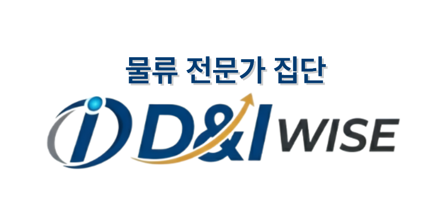

물류 전문 컨설팅 기업
SCM 전략 수립, 운영 진단, 구조 개선 등
현장 중심의 실행형 물류 컨설팅을 제공합니다.
SCM 전략 수립부터 실행까지, 전반적인 물류 솔루션을 제공합니다.
D&I WISE는 단순한 물류대행을 넘어,
물류 전략 수립, 운영 최적화, 공급망 연결, 데이터 기반 관리까지
아우르는 종합 물류 솔루션을 제공합니다.

SCM 전략 수립, 운영 진단, 구조 개선 등
현장 중심의 실행형 물류 컨설팅을 제공합니다.
물류센터 운영 이해도를 바탕으로
안정적인 인력 수급과 현장 운영 대응력을 확보합니다.
배송 차량 네트워크와 주선 역량을 기반으로
안정적 운송 운영과 납품 품질 향상을 지원합니다.
D&I WISE는 단순한 물류대행을 넘어,
전략 수립부터 운영 구조 설계, 현장 실행, 데이터 기반 관리까지
전체 물류 흐름을 유기적으로 연결합니다.
SCM 전략 수립부터 운영 구조 진단, 원가 안정화 방향까지 고객 상황에 맞는 실행형 물류 솔루션을 제안합니다.
창고, 피킹, 출고, 배송, 납품까지 이어지는 전 과정을 안정적으로 설계하고 운영 체계에 맞춰 실행합니다.
실시간 운영 데이터와 KPI를 바탕으로 성과와 개선 포인트를 함께 점검하는 관리 체계를 제공합니다.
입고부터 최종 납품까지 끊기지 않는 구조를 설계하여 비용 절감, 운영 안정성, 납기 품질 향상으로 연결합니다.
상품 특성에 맞는 입고 기준과 초기 운영 프로세스를 정리합니다.
온도와 제품 특성을 고려한 보관 기준과 창고 운영 체계를 세웁니다.
속도와 정확도를 동시에 높이는 피킹 및 출고 프로세스를 설계합니다.
차량 수급과 운송 네트워크를 통해 안정적인 배송 구조를 지원합니다.
최종 납품 이후 발생 가능한 이슈까지 포함한 대응 체계를 제공합니다.
인력, 차량, 현장 소통, KPI 분석까지 각각의 운영 요소를 분리하지 않고 하나의 실행 구조로 묶습니다.
보유 네트워크와 현장 운영 경험을 바탕으로 3PL 운영 원가의 효율성과 공급 안정성을 높입니다.
납품 과정에서 발생하는 공급, 클레임, 운영 이슈를 빠르게 조율하며 고객사와 화주사의 만족도를 함께 높입니다.
식자재 기업의 구매 및 매입 구조와 연결된 이해를 바탕으로 공급 기회 확대와 안정적 매출 향상을 지원합니다.
운영 데이터를 정리하고 KPI를 제공하여 성과와 개선 포인트를 함께 점검하는 체계를 구축합니다.